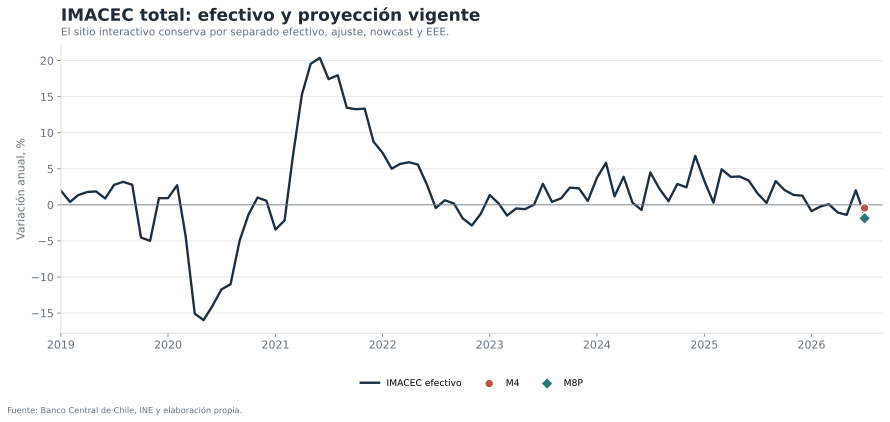
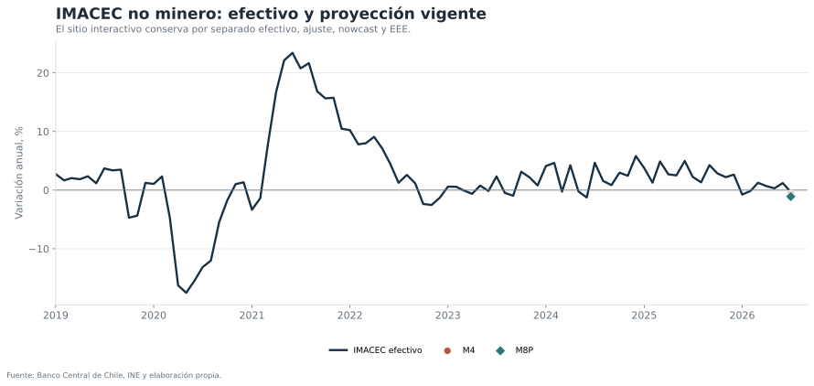
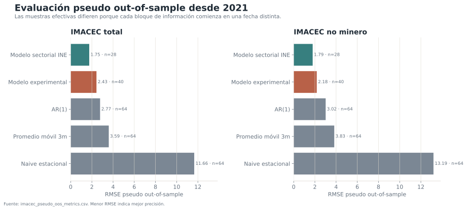

Pregunta económica
¿Es posible anticipar el crecimiento anual del IMACEC total y del IMACEC no minero antes de la publicación oficial, respetando el conjunto de información que realmente estaba disponible en cada momento del ciclo mensual?
El proyecto se construye como un sistema de vintages. Cada actualización reconoce tres estados distintos:
- Primera señal: estadísticas experimentales y variables de alta frecuencia.
- Información sectorial: minería, manufactura, comercio, servicios y electricidad cuando el INE ha publicado el bloque necesario.
- Cierre del ciclo: dato efectivo del IMACEC, que reemplaza la proyección y permite evaluar el error.
Resultado vigente
La estimación para mayo de 2026 apunta a una variación anual de -0,90% en el IMACEC total y de +0,79% en el componente no minero. La divergencia sugiere una lectura de actividad agregada débil, pero con mejor desempeño fuera del componente minero.
Estas cifras deben interpretarse junto con sus intervalos y con el estado del ciclo informativo. No son una publicación oficial ni una estimación en tiempo real libre de revisiones.


Arquitectura del nowcast
El vector Xt,v cambia con el vintage v. La especificación temprana usa estadísticas experimentales, crédito, ventas, UF y variables calendario. La especificación sectorial incorpora indicadores INE únicamente cuando están disponibles para el mes objetivo. Esta separación evita el uso implícito de información futura.
Los dos modelos se estiman para IMACEC total y no minero. Además del ajuste interno, se comparan con benchmarks simples: AR(1), promedio móvil de tres meses y regla estacional a doce meses.
Evaluación pseudo out-of-sample

| Variable | Modelo | N | RMSE | MAE | Ventana evaluada |
|---|---|---|---|---|---|
| IMACEC total | Modelo con indicadores sectoriales INE | 28 | 1,75 | 1,40 | 2024-01 a 2026-04 |
| IMACEC total | Modelo con estadísticas experimentales | 40 | 2,43 | 1,78 | 2023-01 a 2026-04 |
| IMACEC total | Benchmark AR(1) | 64 | 2,77 | 2,05 | 2021-01 a 2026-04 |
| IMACEC total | Promedio móvil 3m | 64 | 3,59 | 2,38 | 2021-01 a 2026-04 |
| IMACEC total | Naive estacional t-12 | 64 | 11,66 | 7,90 | 2021-01 a 2026-04 |
| IMACEC no minero | Modelo con indicadores sectoriales INE | 28 | 1,79 | 1,46 | 2024-01 a 2026-04 |
| IMACEC no minero | Modelo con estadísticas experimentales | 40 | 2,18 | 1,56 | 2023-01 a 2026-04 |
| IMACEC no minero | Benchmark AR(1) | 64 | 3,02 | 2,26 | 2021-01 a 2026-04 |
| IMACEC no minero | Promedio móvil 3m | 64 | 3,83 | 2,49 | 2021-01 a 2026-04 |
| IMACEC no minero | Naive estacional t-12 | 64 | 13,19 | 8,78 | 2021-01 a 2026-04 |
El modelo sectorial INE presenta el menor RMSE en la muestra donde puede evaluarse, pero esa comparación no es perfectamente homogénea porque cuenta con menos observaciones. La conclusión profesional no es que “gana” sin condiciones, sino que agrega información útil cuando el bloque sectorial está efectivamente disponible.
Qué se corrigió en esta versión
- La página ya no mezcla proyecciones de meses anteriores con el vintage vigente.
- El modelo INE desaparece del bloque de proyección cuando sus insumos no están disponibles.
- Los gráficos distinguen efectivo, ajuste de cada modelo y nowcast con formas y trazos diferentes.
- La evaluación pseudo out-of-sample informa el tamaño muestral de cada comparación.
- La publicación consume archivos procesados; una falla de descarga no destruye el sitio completo.
Límites de interpretación
- La evaluación es pseudo out-of-sample: utiliza la base final reconstruida y no todos los vintages históricos en tiempo real.
- Los intervalos reflejan incertidumbre estadística condicional al modelo, no toda la incertidumbre de revisión de datos.
- Quiebres extraordinarios, como la pandemia, pueden dominar métricas agregadas.
- La disponibilidad y oportunidad de los indicadores sectoriales deben revisarse en cada actualización.